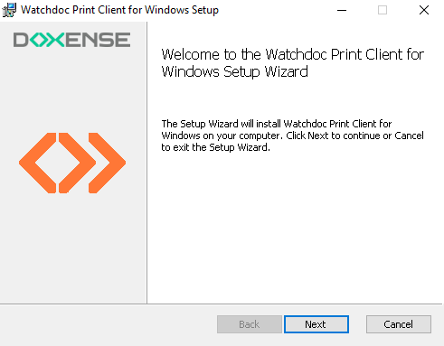
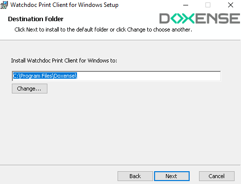
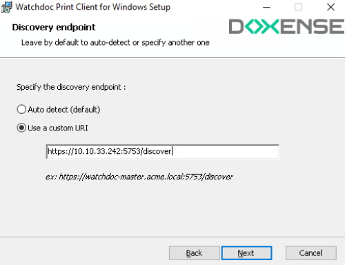
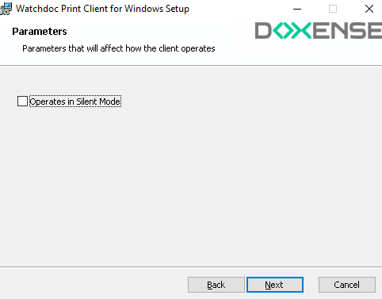
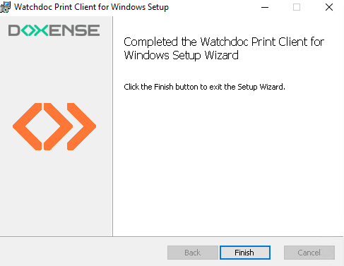
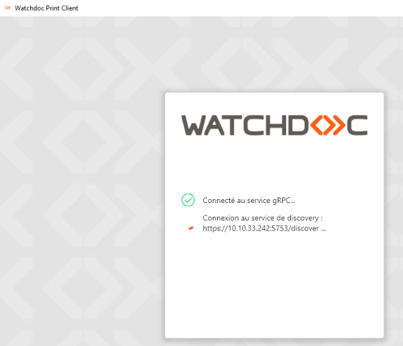
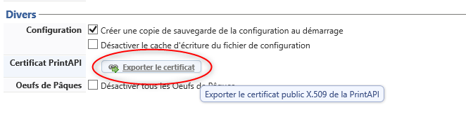
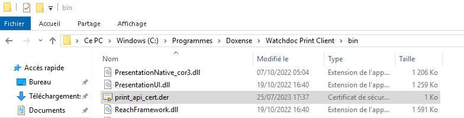

Principe
Watchdoc Print Client for Windows doit être installé sur chaque poste utilisateur qui souhaite imprimer.
Le logiciel d'installation est fourni par Doxense sous la forme d'un fichier msi nommé WatchdocPrintClient-x.x.x.x.msi téléchargeable depuis le site de documentation.
Il peut être être déployé automatiquement sur un grand nombre de postes utilisateurs à l'aide d'une stratégie de groupe ou installé manuellement et unitairement par un administrateur sur un poste utilisateur.
Comme WPC repose sur une file universelle (installée par défaut) à laquelle un pilote doit être associé, veillez à télécharger préalablement un pilote depuis WSC (cf. Charger un pilote dans WSC).
Procédure
Installation en masse
L'installation en masse à l'aide peut être réalisée :
-
sous GPO, la ligne de commande est :
msiexec /i "WatchdocPrintClient-%VERSION%.msi" /qn /norestart DISCOVER_URI_MODE=1 DISCOVER_CUSTOM_URI="https://serveur:port/discover"
-
sous Intune, le package .msi peut être déployé à l'aide de l'outil Microsoft Endpoint Manager admin center.
Cet outil permet de créer une Application Windows de type Application métier (Line-of-business app).
Les arguments de ligne de commande pour Intune sont :
/qn DISCOVER_URI_MODE=1 DISCOVER_CUSTOM_URI="https://server:port/discover"
où le paramètre DISCOVER_CUSTOM_URI correspond à l'url du serveur Watchdoc Master (ou d'un autre serveur Watchdoc) et du port Watchdoc. DSP.
La communication entre le Client Windows et son serveur Watchdoc doit être sécurisée à l'aide du certificat print_api_cert.der de la Print API Watchdoc. Celui-ci est disponible sur le serveur Master et doit être copié dans le répertoire bin du dossier d'installation du Client Windows, par défaut, C:\Program Files\Doxense\Watchdoc Print Client\bin.
Installation unitaire
-
Assurez-vous de disposer du fichier d'installation WatchdocPrintClient-x.x.x.x.msi (téléchargeable depuis le site de documentation) ;
-
connectez-vous en tant qu'administrateur sur le poste utilisateur sur lequel doit être installé WPC for Windows ;
-
copiez le fichier d'installation .msi sur le poste client et cliquez dessus pour lancer l'assistant d'installation Watchdoc Print Client for Windows Setup ;
-
dans l'assistant, cliquez sur Next pour valider les différentes étapes :

-
Indiquez le dossier dans lequel vous souhaitez installer Watchdoc Print Client :

-
Dans l'interface Discovery endpoint,
-
sélectionnez l'option Use a custom URI ;
-
dans le champ, saisissez l'adresse de votre serveur Watchdoc et son port, suivis de /discover :

-
-
Dans l'interface Parameters,
-
laissez la case Operates in Silent Mode décochée si vous souhaitez que les utilisateurs puissent interagir avec WPC ;
-
cochez la case Operates in Silent Mode si vous souhaitez masquer l'interface graphique à vos utilisateurs. Dans ce cas, vos utilisateurs lancent leurs travaux et n'ont pas besoin de désigner d'emplacement pour aller débloquer leurs impressions sur le périphérique. Seul l'onglet "Profil" du Watchdoc Print Client for Windows est visible.

-
-
Lorsque le message de fin d'installation s'affiche, cliquez sur Finish :

→ Watchdoc Print Client Windows se lance et tente de se connecter au service discovery sans succès. Il convient de poursuivre la configuration dans l'interface d'administration de Watchdoc :

-
Connectez-vous à l'interface d'administration de Watchdoc.
-
Depuis le Menu Principal, section Configuration, cliquez sur Configuration avancé > Configuration Système.
-
Dans la section Divers, cliquez sur Exporter le certificat :

-
Le fichier généré est nommé print_api_cert.der.
Enregistrez-le dans le dossier bin du dossier d'installation de Watchdoc Print Client (par défaut, C:\Program Files\Doxense\Watchdoc Print Client\bin) :

-
La boîte d'authentification Watchdoc Print Client Windows s'affiche.
L'utilisateur peut alors utiliser WPC for Windows.